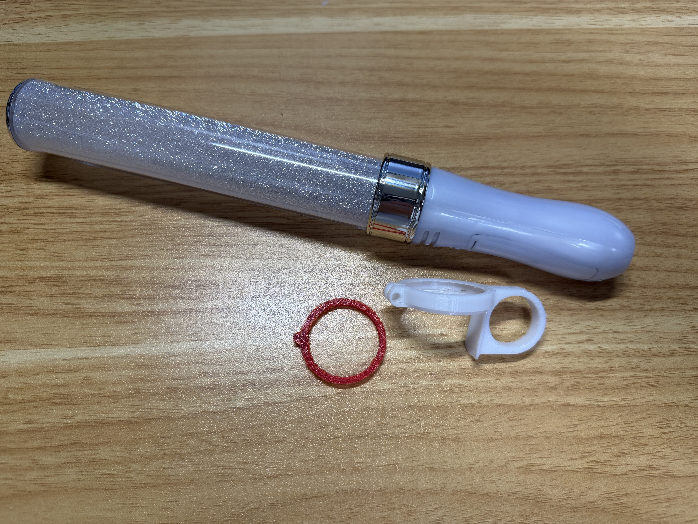
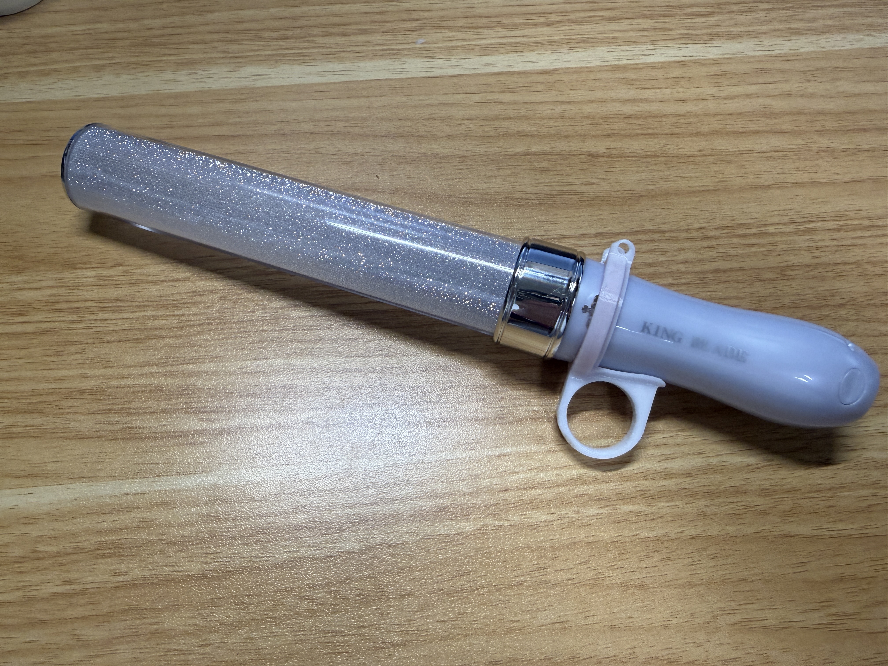
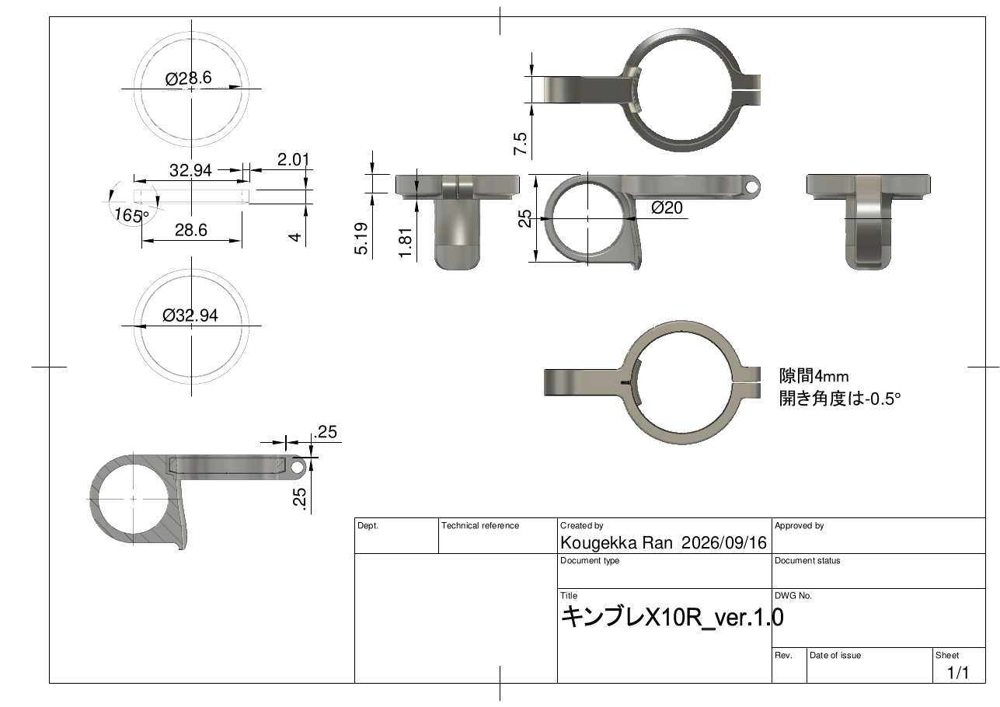
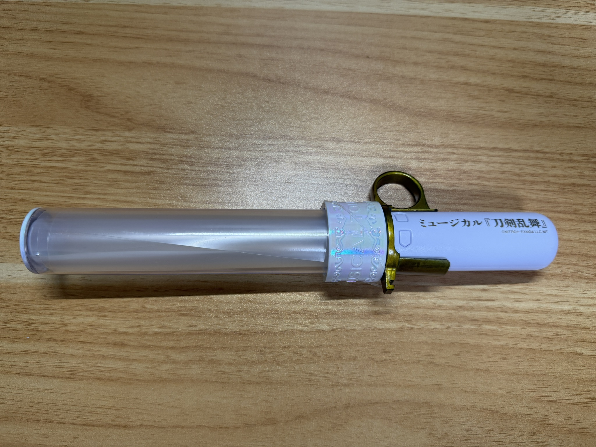

IP consultation · 30 min
FIRST CLAPPER
（仮称：penlaring）
知的財産・販売表示に関する相談資料
弁理士との無料相談｜画面共有用
相談予定：2026年11月頃の販売開始を想定
目的と進め方
30分で確認したいこと
販売できるか
他社の知的財産権との関係を確認したい。
販売・広告で守ること
互換性の説明、名称・画像・コピー、必要な表示を整理したい。
権利取得の要否
売上や事業規模に応じた意匠・特許・実用新案等の選択肢を聞きたい。
指摘を受けた場合
第三者から権利侵害を指摘されたときの初動を確認したい。
製品概要
ペンライトを持つ手に、短い自由を
ペンライトを持ったまま一時的に別の動作をし、その後すばやく通常の持ち方へ戻るための補助具です。
主な使用イメージ
拍手など、ライブ中の短い動作をするときに指を少し自由にする。
製品の主軸
落下防止を主目的とする製品ではなく、「別動作から通常状態へ戻る」使い方を想定。
製品名は仮称。機能・効果の表現について相談希望。
現行モデル
インナーリング＋カバーリング
インナーリング
グリップ部に装着する内側パーツ
材質：TPU 95A
カバーリング
インナーと組み合わせる外側パーツ。指を通すリング部を備える。
材質：PETG
模式図（形状・寸法は模式的）。寸法と部品形状の確認は次ページの原図を参照。
現物写真
分解状態・組立状態

① 分解状態｜ペンライト、インナーリング、カバーリング

② 組立状態｜グリップ部に装着した状態
設計図
XR_ver1.0｜2026/09/16

原図に記載の寸法・注記をそのまま参照。図面タイトル：キンブレX10R_ver.1.0
販売形態の案
構成・色・サイズを検討中
インナー単体
複数色を検討
カバー単体
白・黒を検討
2個セット
組み合わせ販売案
販売形態・組合せは相談時点の検討案。
互換性と表示
名称ではなく、寸法で適合を案内
装着確認済み
- KING BLADE X10R
- ミュージカル刀剣乱舞公式ペンライト（通常公演タイプ）
販売時の方針
- 広告では原則として製品名を出さない
- グリップ部の円周を購入者が測定し、適合を判断
- 装着できない例をイラストで案内
広告方針
商品を誤認させない見せ方
画像
ダミー3Dプリント、3DCG、AI生成画像を使用する方針。
名称・ロゴ
特定メーカー名・商品名・ロゴは原則として広告に出さない方針。
想定コピー
「.1秒でも速く、この感動を伝えたい」
「ペンライトを持ったまま、拍手できる」
「ライブ中の指を、ちょっと自由に」
広告での使用可否、性能・効果の裏付けや必要な注記を相談。
開発・公開履歴
旧型の公開と現行型の非公開を区別
旧型を公開
Twitterで一般公開。
現行構造を着想
2パーツ構造の簡単な設計メモ。設計ソフト上に痕跡があり、タイムスタンプ確認可。
現行型を具体化
初めて具体設計・試作・3Dプリント。
一般公開なし
知人のペンライトで適合確認。試作品の譲渡・貸与・詳細公開なし。
2024年の記録は開発経緯の資料として提示予定。
旧型
専用内寸＋突起＋透明ゴム

2022年公開の旧型写真
旧型の動作動画（クリックして再生）
旧型の構造・課題
- 専用の内寸に突起を設け、透明ゴムで固定
- 使用中に横方向へ回転する弱点があった
- この課題を踏まえ現行構造を検討
構造の変遷
旧型と現行型
| 比較項目 | 旧型（2022年公開） | 現行型（2026年試作） |
|---|---|---|
| 構成 | 専用内寸・突起・透明ゴム | インナーリング＋カバーリング |
| 固定の考え方 | 突起とゴムで固定 | 図面・現物確認後に記載 |
| 把握している課題 | 横方向に回転 | 適合確認を実施 |
| 公開状況 | 2022/04/20 Twitter公開 | 一般公開なし |
着想・予備調査
着想の起点と現時点の把握
着想元
スマートフォン用リングの使用体験から着想。
具体的な構造・寸法・固定方式は独自に設計。
類似品の予備確認
現時点で同一・近似のものは確認できていない。
正式な特許・実用新案・意匠調査ではありません。
権利帰属・仕様
本人が単独で開発・製造
| 考案・設計・製造 | 本人が単独で実施 |
|---|---|
| 製造方法 | 3Dプリントによる自家製造 |
| インナー | TPU 95A |
| カバー | PETG |
| 想定価格 | 2,000〜2,500円 |
|---|---|
| 販売開始 | 2026年11月頃 |
| 販売先 | BOOTH・屋号 |
| イベント | デザインフェスタ／ワンダーフェスティバル等は可能性として検討 |
過去の対応経験
指摘を受けたときの判断・対応を相談
過去に、市販製品へ装着して別用途に使う治具を販売した際、第三者から「著作権侵害ではないか」と指摘を受けた。
相手が示した権利区分には不正確さがある可能性を感じたが、自分では判断せず、念のため販売停止・返金・回収を実施。
相談項目 1–4｜販売と表示
弁理士に聞きたいこと
1｜現行モデルを販売すること自体に、他社の知的財産権上の問題はあるか
2｜互換性訴求でメーカー名・商品名・ロゴをどこまで使用できるか
3｜名称を出さず円周測定方式で販売する場合、必要な表示・注意事項は何か
4｜広告コピー・性能表現で避けること、用意すべき根拠は何か
メモはこのブラウザ内に自動保存されます。
相談項目 5–8｜権利と対応
弁理士に聞きたいこと
5｜2022年公開の旧型は、現行モデルの販売・権利取得にどう影響するか
6｜売上・事業規模を踏まえ、意匠・特許・実用新案等を出願する価値はあるか
7｜2026年11月の販売開始前に最低限必要な権利調査・手続きは何か
8｜第三者から侵害を指摘された際の初動、記録、相談先はどうすべきか
締め
今日、持ち帰りたい判断
販売準備
販売可否の判断に必要な追加確認と、販売前の対応
表示・広告
商品ページとSNSでの具体的な注意点
権利化・初動
出願の検討時期と、指摘を受けた場合の手順